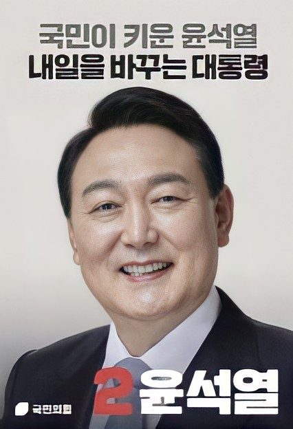

주요 공약
- 코로나 극복 긴급구조 및 포스트 코로나 플랜
- 지속가능한 좋은 일자리 창출
- 수요에 부응하는 주택 250만호 이상 공급
- 스마트하고 공정하게 봉사하는 ‘디지털 플랫폼 정부’구현과 대통령실 개혁
- 과학기술 추격국가에서 원천기술 선도국가로
- 출산 준비부터 산후조리·양육까지 국가책임 강화
- 청년이 내일을 꿈꾸고 국민이 공감하는 공정한 사회-여성가족부 폐지
- 당당한 외교, 튼튼한 안보
- 실현 가능한 탄소중립과 원전 최강국 건설
- 공정한 교육과 미래인재 육성, 모두가 누리는 문화복지